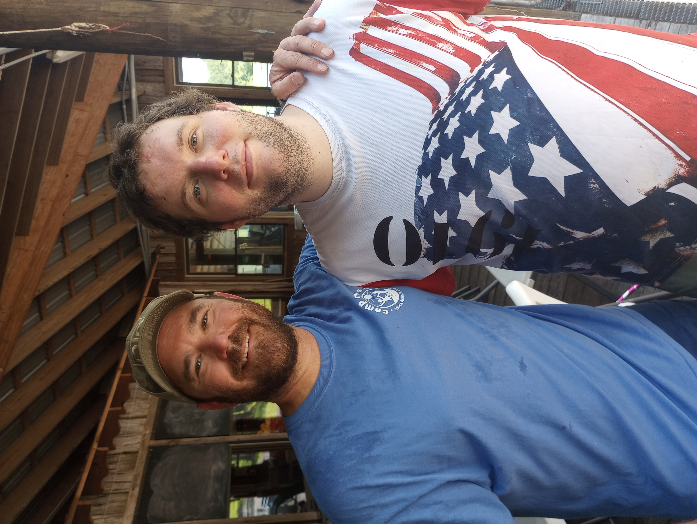
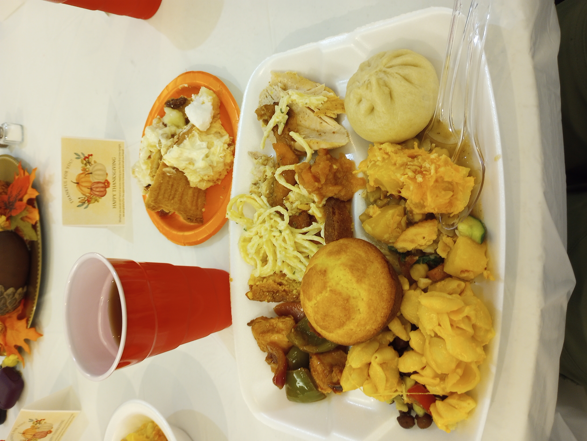
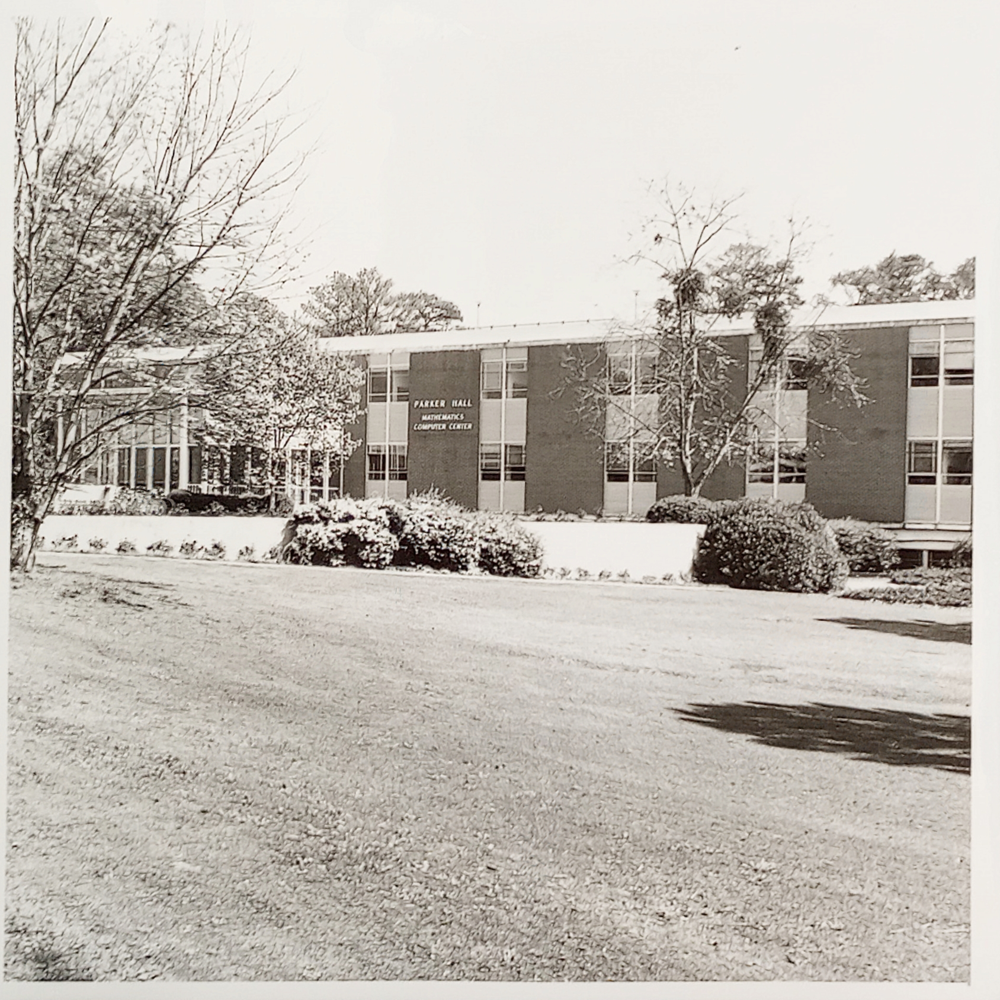
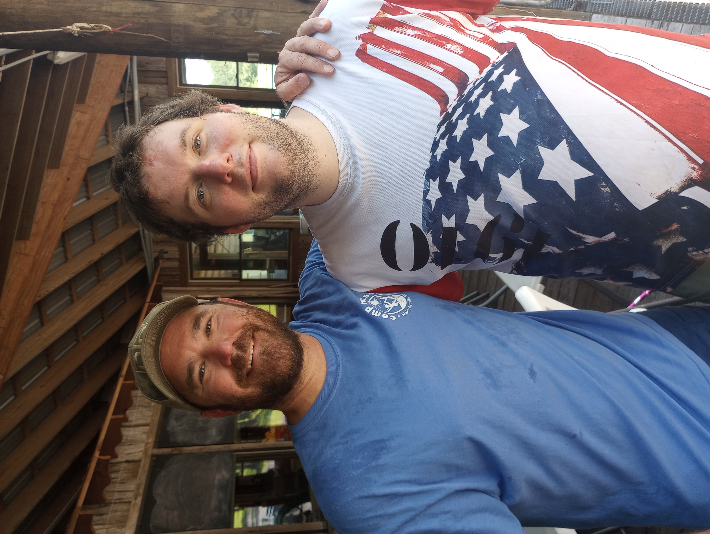
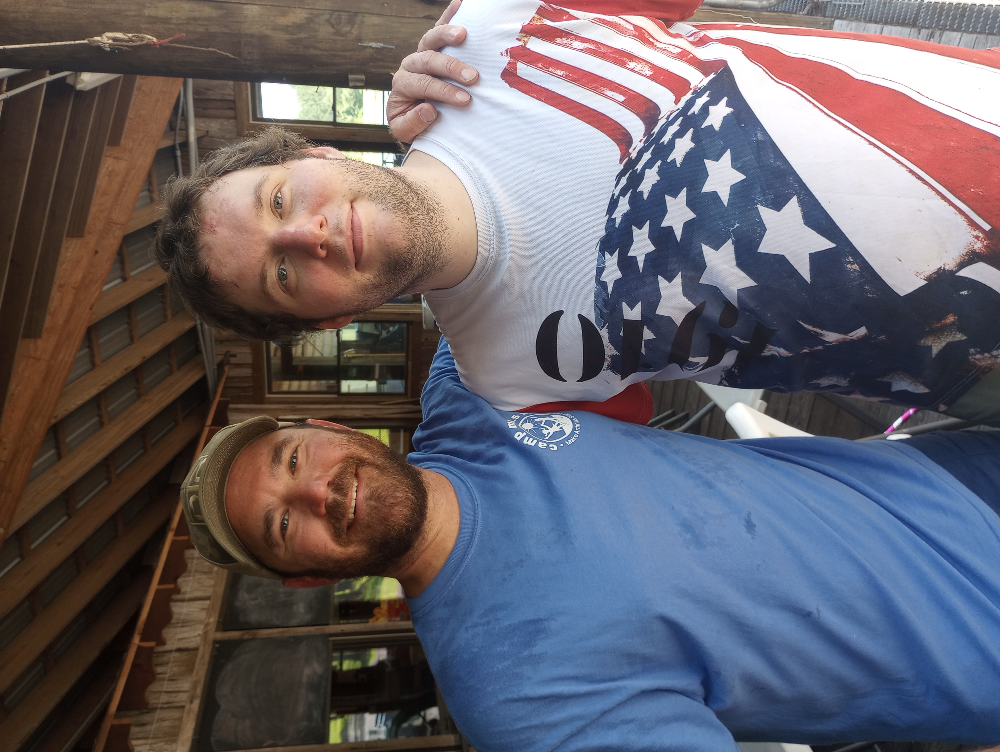

January I started my last semester of my Master degree. Below is a picture of my friend Jessie visting from out of town. I created a cool necktie knot that formss a diagonal strip across the knot.
February I went to a Mardi Gras parade with some friends. Afterwards we went to Mo' Bay Beignet where some of my former students happen to also be there. During lent I volunteer with the fish frys for the Catholic student center and got to chat with a few friends. My classmate Brandon took a silly photo next to the window where we jokingly described it as the Grand Canyon.
March During the Spring Semester Alpha Hall East and Alpha Hall South were torn down to make way for the new Frederick P. Whiddon College of Medicine building. It was amazing watching the buildings be torn down, not often you get to see a hallway open up to the outdoors on a upper level. A few friends got togther during spring break, one of which made dinner which was very kind. I also sucessfully defended my thesis.
April I was very busy in April. I went to two conferences, visited Auburn, and traveled to see the eclipse. For the Math For All confernce I got to stay at The Eliza Jordan 4-star hotel and I gave a talk on my theis. I found a very good restraunt called Mother's Restraunt; they claim to have the world's best ham. I went to Troy Mathfest to give a talk and visited Auburn to talk to the graduate coordinator on the same weekend. I got to go to Hector, Arkansas with the Society of Physics Students and Honor College to see a total solar eclipse for the first time. It was so dark the night before the eclipse that I was able to take a photo of the Milky Way galaxy. I got to go to a Bridgerton theme tea tasting. At the Catholic student center, I was awarded an awrd for the most ambitious. The next day I hosted a game night with some friends. I got trap in an elevator at the library when I was on my way to study Abstract Algebra with some classmates. The Mobile Fire-Rescue Department sent a crew who manage to get the door open wide enough for me to get through. On the eclipse trip, we found a waterfall and we ate at a restraunt called the Purple Cow.
May I graduate and now have a master of science in mathematices. I went to the 33rd Cumberland Conference where I gave another talk on my thesis. I stayed at the Historic Hotel Chester and went to a local restraunt that had alligator nuggets. I went with my mom to view some apartments in Auburn and found a humorous sign at Buc-ee's. My friend Casey invited me to a graduation party at his grandfather's beach house. I played Betrayal at House on the Hill and got to use my bug net for the first time.
June I was a counselor at Camp M.A.S.H. with the green group. We had our first field trip, where we visited UMS Wright. Per tradition we went to Buffalo Wild Wings afterwards. Camp was amazing like usual. I worked with Grant to take care of six boys ages around 9 to 11. I got called up one night after dinner to particpate in a ball sorting game in which I won a gold medal that I gave to one of my campers.

July During the summer I got to work with Dr. Jeff Mudrock and five University of South Alabama students researching list coloring; we finnished up the research in July and shifted to writing up our research. I attended the graduation for my good friend Mary. I also found a friendly dragonfly in my backyard. This month ended up being mostly preparing for the move to Auburn.
August I begin my adventure to obtain a PHD in mathematics at Auburn University. The 2nd year students left a friendly sign of the office I moved into. I share an office with 17 other people! So naturally I claimed a corner spot. By the way, we involuntarily have pet raccons! So, you can occasionaly see the hallway tiles move, have random paw prints in the building, and hear screaming (raccons like to scream). I am also a Teaching Assistant for Linear Algebra for a class of ~90 students and a grader for Linear Algebra for a class of ~180 students. So I have in total ~270 students!
September I visted Ross Hall, which has a Foucault pendulum. The pendulum in Ross Hall takes 44.5 hours to rotate around the table. I felt like the pendulum was the most famous thing about Auburn besides American football. This month I also got a nice night time sky picture after getting off the bus one day.
October I facilitated a Rook's Maze activity at the Auburn's Destination STEM event which is a STEM outreach event for middle school students from the surrounding counties. I started a recipe notebook which contains different recipes that I want to try or occasionally make. I tried to take some photographs of the northern lights, but there was just too much light pollution around Auburn. However, I did get a couple of nice night time sky pictures. I also visited Opelika and walked around their downtown area. I found a funny sign that I originally learned about from my friend Anika. I also found some interesting art sculptures in downtown Opelika. On the 16th, Auburn University had a holiday called Hey Day. During Hey Day the Auburn University Raptor Center brought out a bald eagle, red-tailed hawk, a barn owl, and a barred owl for people to say hey to. If you ask me, I think every day should be a Hey Day. To wrap up October, we had eight students from the Master of Science program at the University of South Alabama visit.
November I went to the the 29th Atlanta Lecture Series hosted by Georgia State University with Sayantani, another Math PhD student at Auburn. While in Atlanta we stumbled across the Martin Luther King Jr. national historical park where Martin Luther King Jr and Coretta Scott King grave is located. At the national park are six principles of nonviolence. A few other cool things that you can do in Atlanta is that you can go see the Olympic rings, a statute of liberty, and the mural of represenitive John Lewis. To give an update on the raccons, they are now the mascot of the Department of Mathematics and Statistics with their own poster on a door in the main office. My friend Sayantani invited me to attend an international Thanksgiving gathering with her which had many delicious ethnic foods. I went to a holiday market in Auburn which had an event with a giant Christmas tree. On the Saturday before Thanksgiving, I tried squid for the first time, went to Buc-ee's with my friend Sayantani, explored a labyrinth, and saw the Christmas decorations in Opelika. As a little fun fact labyrinths are usually a single path maze which has no branches nor dead ends. Parker Hall is an old building built in 1963 that has a few quirks; therefore, I went to the library archives to find out a little bit of the history of Parker Hall. Wile at the archives I found a humourous drawing of a raccon which is extra funny given the raccon residents of Parker Hall. After returning to Mobile for Thanksgiving break, I visited my maternal grandparents' home to dicover my grandfather has "NO!NO"'s in the fridge which is just what onion looks like written upsidedown.While I was also in Mobile I decided to visit the Christmas decorations at the University of South Alabama.


"We will not be satisfied until justice rolls down like waters, and righteousness like a mighty stream"-Martin Luther King Jr.SIX PRINCIPLES OF NONVIOLENCE365: Fundamental tenets of Dr. King's philosophy of nonviolence described in his first book, Stride Toward Freedom<\i>. Dr. King often said, he got his inspiration from Jesus Christ and his techniques from Mohandas K. Gandhi. These principles should be embraced as a lifestyle.
This is a caption for the image.This is a caption for the image.This is a caption for the image.
This is a caption for the image.This is a caption for the image.This is a caption for the image.
December
You can see my archive of my previous holiday web pages here. For now this is the only one since it is the first.
I got the idea to do this from Erich Friedman a retired mathematician in Florida.


 
